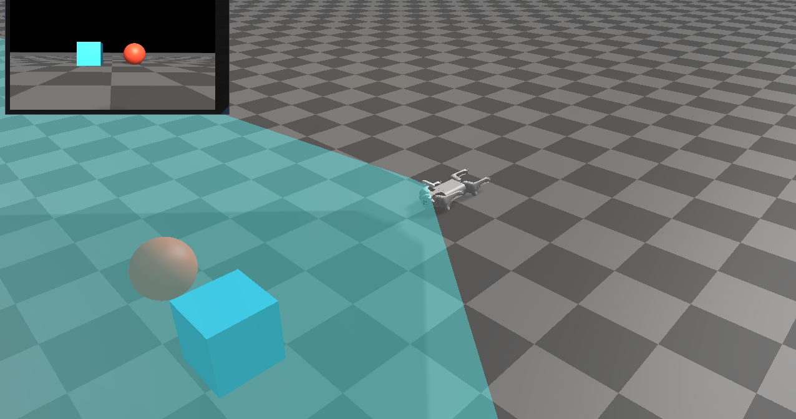

Rayrai Example: RGB Camera
Overview
Renders the Go1 RGB camera into an ImGui window and draws the camera frustum in the scene. It demonstrates the RGB sensor rendering path and UI texture display.
Screenshot

Binary
CMake target and executable name: rayrai_rgb_camera.
Run
Build and run from your build directory:
cmake --build . --target rayrai_rgb_camera
./rayrai_rgb_camera
On Windows, run rayrai_rgb_camera.exe instead.
This example uses the in-process rayrai renderer (no external client required).
Details
Loads Go1 with the D455 module and fetches the RGB camera.
Renders the RGB frame with an external camera and shows it in ImGui.
Adds a camera frustum overlay for debugging intrinsics.
Source
#include <algorithm>
#include <memory>
#include <string>
#include <vector>
#include <glm/glm.hpp>
#include <glm/gtc/type_ptr.hpp>
#include "rayrai/example_common.hpp"
#include "rayrai_example_resources.hpp"
#include "rayrai/Camera.hpp"
#include "rayrai/CameraFrustum.hpp"
#include "raisim/World.hpp"
namespace
{
ImVec2 fitToAspect(ImVec2 avail, float aspect) {
if (aspect <= 0.0f)
return avail;
ImVec2 size = avail;
size.y = size.x / aspect;
if (size.y > avail.y) {
size.y = avail.y;
size.x = size.y * aspect;
}
return size;
}
} // namespace
static inline glm::vec3 toGlm(const raisim::Vec<3>& v) {
return glm::vec3(v[0], v[1], v[2]);
}
static inline glm::mat3 toGlm(const raisim::Mat<3, 3>& R) {
return glm::make_mat3(R.ptr());
}
int main(int argc, char* argv[]) {
ExampleApp app;
if (!app.init("rayrai_example_rgb", 1280, 720))
return -1;
auto world = std::make_shared<raisim::World>();
world->addGround();
const std::string sep = raisim::Path::separator();
const std::string go1Dir = rayraiRscPath(argv[0], "go1");
std::vector<std::string> modules = {"d455"};
auto go1 = world->addArticulatedSystem(go1Dir + sep + "go1.urdf", modules, go1Dir);
go1->setGeneralizedCoordinate({0, 0, 0.32, 1.0, 0.0, 0.0, 0.0, 0, 0.67, -1.3, 0, 0.67, -1.3, 0,
0.67, -1.3, 0, 0.67, -1.3});
auto rgbCam = go1->getSensorSet("d455_front")->getSensor<raisim::RGBCamera>("color");
auto sphere = world->addSphere(0.2, 1);
sphere->setAppearance("0.9,0.3,0.2,1.0");
auto box = world->addBox(0.4, 0.4, 0.4, 1);
box->setAppearance("0.2,0.7,0.9,1.0");
auto viewer = std::make_shared<raisin::RayraiWindow>(world, 1280, 720);
viewer->setBackgroundColor({35, 35, 45, 255});
auto rgbCamera = std::make_shared<raisin::Camera>(*rgbCam);
auto rgbFrustum = viewer->addCameraFrustum("rgb_frustum", glm::vec4(0.2f, 0.7f, 1.0f, 0.4f));
rgbFrustum->setDetectable(false);
rgbCam->updatePose();
const glm::vec3 sensorPos = toGlm(rgbCam->getPosition());
const glm::mat3 sensorRot = toGlm(rgbCam->getOrientation());
glm::vec3 forward = glm::normalize(glm::vec3(sensorRot[0]));
glm::vec3 up = glm::normalize(glm::vec3(sensorRot[2]));
glm::vec3 right = glm::normalize(glm::cross(forward, up));
if (glm::dot(right, right) < 1e-6f) {
right = glm::normalize(glm::cross(forward, glm::vec3(0.0f, 0.0f, 1.0f)));
}
up = glm::normalize(glm::cross(right, forward));
const glm::vec3 base = sensorPos + forward * 2.0f;
const glm::vec3 spherePos = base + right * 0.4f + up * 0.2f;
const glm::vec3 boxPos = base - right * 0.4f - up * 0.1f;
sphere->setPosition(spherePos.x, spherePos.y, spherePos.z);
box->setPosition(boxPos.x, boxPos.y, boxPos.z);
while (!app.quit) {
app.processEvents();
if (app.quit)
break;
world->integrate();
viewer->renderWithExternalCamera(*rgbCam, *rgbCamera, {});
if (rgbFrustum) {
rgbFrustum->updateFromCamera(*rgbCamera);
}
app.beginFrame();
app.renderViewer(*viewer);
const auto& prop = rgbCam->getProperties();
const int w = std::max(1, prop.width);
const int h = std::max(1, prop.height);
const float aspect = float(w) / float(h);
ImGui::SetNextWindowPos(ImVec2(10, 10), ImGuiCond_FirstUseEver);
ImGui::SetNextWindowSize(ImVec2(360, 220), ImGuiCond_FirstUseEver);
ImGui::Begin("RGB Sensor", nullptr, ImGuiWindowFlags_NoCollapse);
ImVec2 avail = ImGui::GetContentRegionAvail();
ImVec2 size = fitToAspect(avail, aspect);
ImTextureID tex = (ImTextureID)(intptr_t)rgbCamera->getFinalTexture();
ImGui::Image(tex, size, ImVec2(0, 1), ImVec2(1, 0));
ImGui::End();
app.endFrame();
}
viewer.reset();
app.shutdown();
return 0;
}